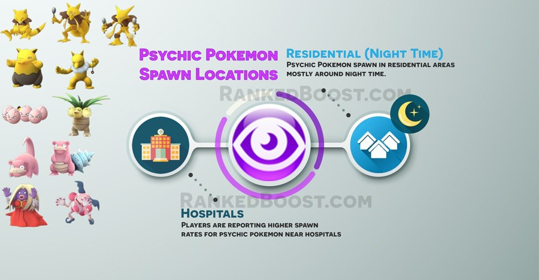

Where Do I Catch Psychic Pokemon In Pokemon Go: Psychic pokemon tend to appear in residential areas mostly during night time. While others have reported finding psychic pokemon near hospitals.
How To Get Psychic Type Pokemon Tips:
Where Do I Find Psychic Pokemon? – ( Psychic Pokemon Locations )
Confirmed Psychic Pokemon Go Spawn Locations: Residential (Night Time) – Hospitals – Grassy Areas
Unconfirmed Psychic Pokemon Go Spawn Locations: Beach – Library
There is a Total of 14 Pokemon Go Psychic Pokemon: Abra, Kadabra, Alakazam, Drowzee, Hypno, Exeggcute, Exeggutor, Slowpoke, Slowbrow Jynx and Mr. Mime. Mewtwo and Mew do not appear in the wild, they will mostly likely be a special event held at a later date.
